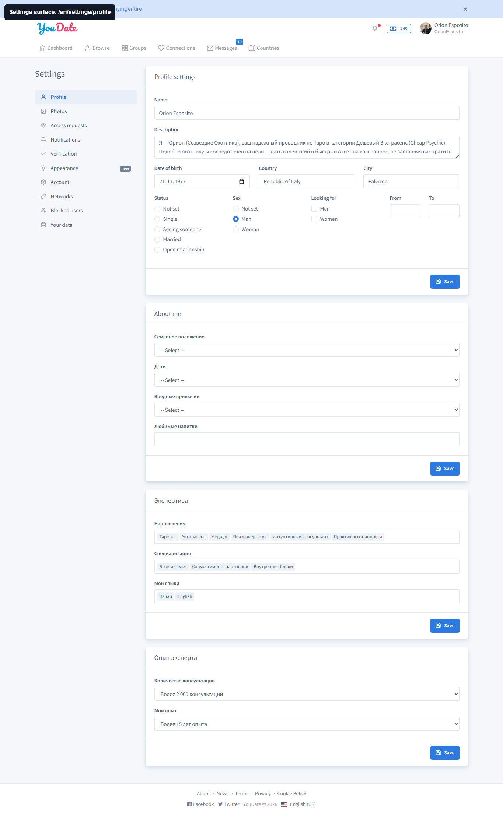
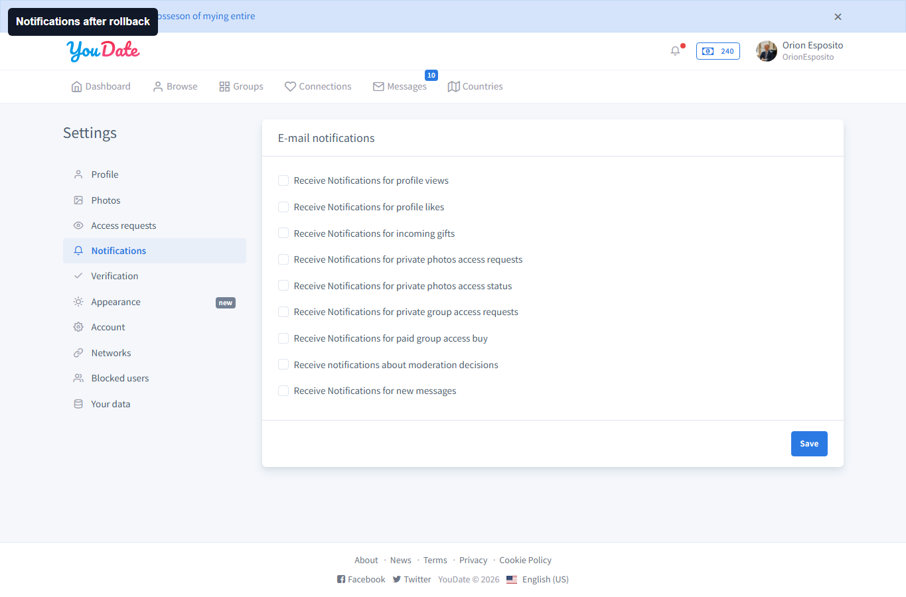
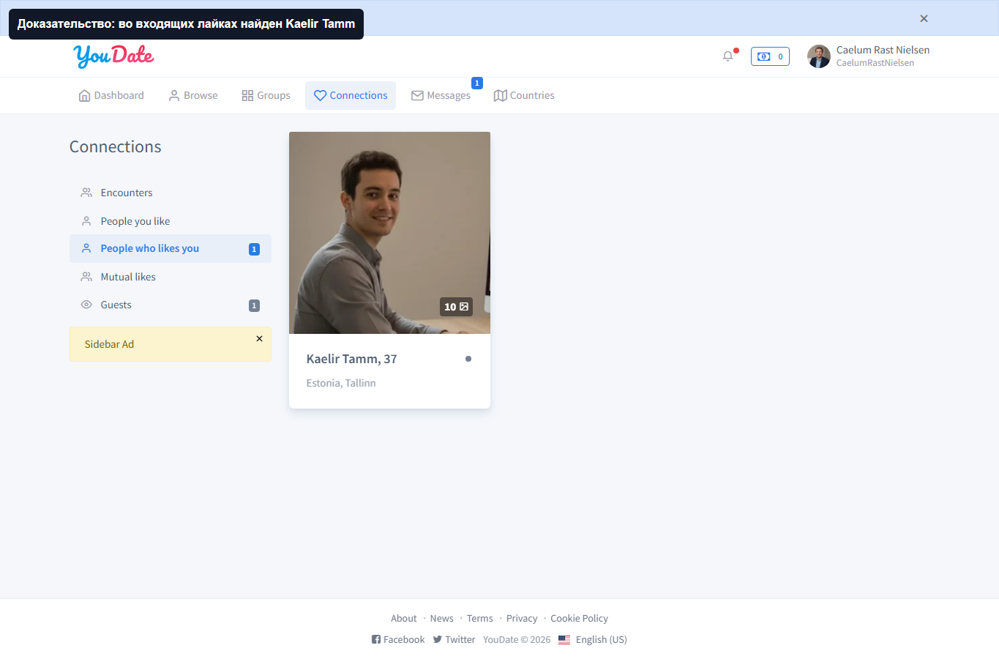
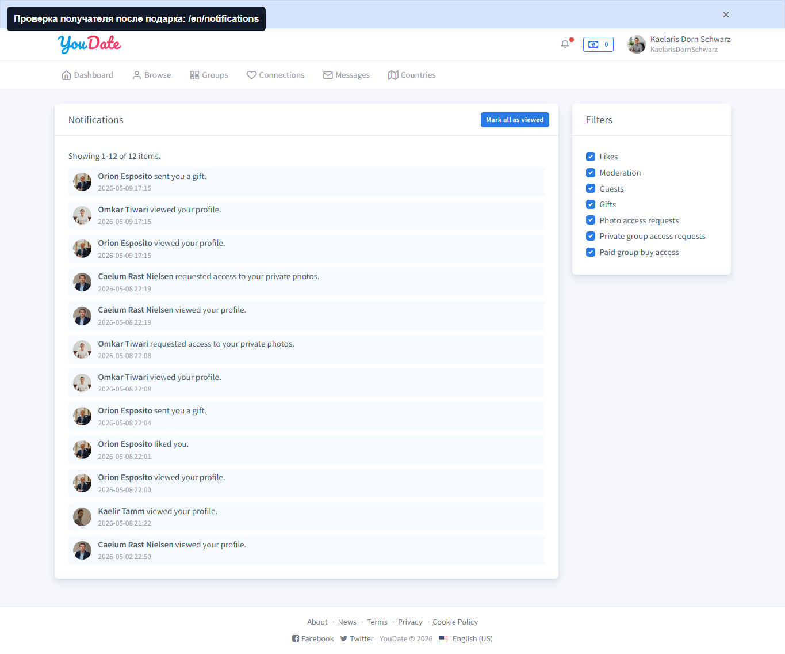
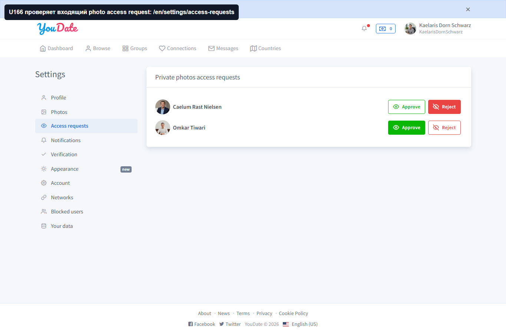
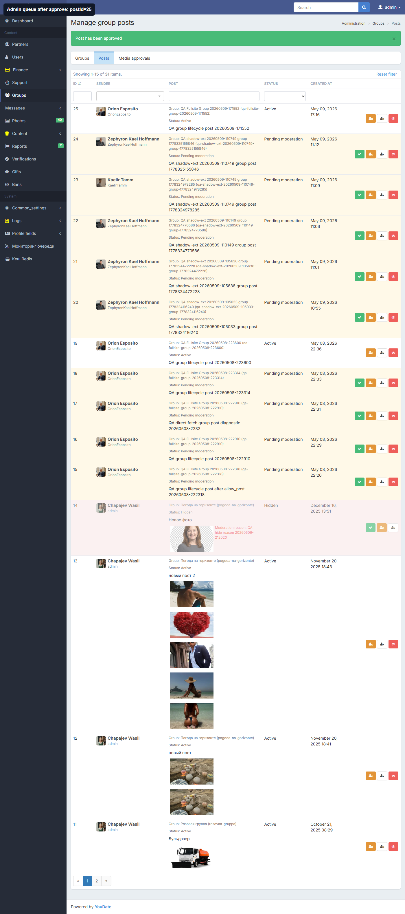
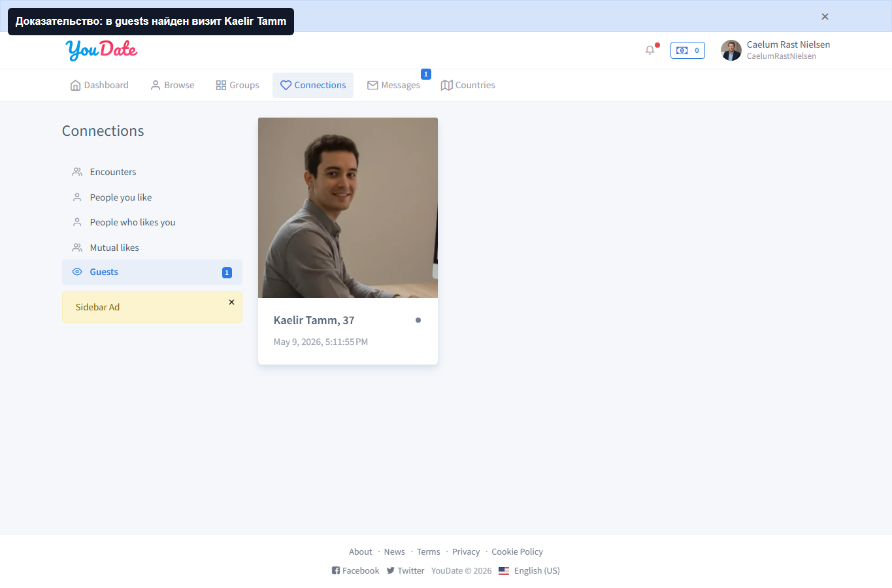

PASS
Settings routes
Проверены profile/photos/upload/access requests/notifications/verification/appearance/account/networks/blocked users/data. Profile и notifications сохранены и откатаны.
Raw evidence
Confideline QA/BA · 2026-05-09
Свежий проход по новым страницам и пользовательским действиям: настройки аккаунта, profile save/rollback, notification save/rollback, likes, gifts, photo access, group lifecycle с admin approve и viewer-side proof.
Критичных FAIL нет.
Settings, interactions, gift, photo access, groups.
Profile и notifications восстановлены.
Новых багов уровня FAIL не найдено. Основные новые страницы открываются без 404, безопасные формы настроек сохраняются и откатываются, gift/photo access доходят до второй стороны, group lifecycle с pending/approve/viewer visibility работает.
Остаточный WARN: общий interaction smoke не доказал guests visit signal как PASS. Это не блокер текущего прохода, потому что отдельные важные действия gift/photo access закрыты PASS.
| Статус | Контур | Checks | FAIL | WARN | Findings | Errors |
|---|---|---|---|---|---|---|
| PASS | groups | 8 | 0 | 0 | 0 | 0 |
| PASS | photoAccess | 2 | 0 | 0 | 0 | 0 |
| PASS | profile | 16 | 0 | 0 | 0 | 0 |
| PASS_WITH_GAPS | interactions | 5 | 0 | 1 | 0 | 0 |
| PASS | gift | 2 | 0 | 0 | 0 | 0 |
Проверены profile/photos/upload/access requests/notifications/verification/appearance/account/networks/blocked users/data. Profile и notifications сохранены и откатаны.
Raw evidence
Notification checkbox меняется, сохраняется после reload и возвращается в исходное состояние.
Raw evidence
Like от U167 к U168 проверен на стороне получателя через incoming likes.
Raw evidence
Gift отправлен через реальный /gift/send, получатель видит evidence в notifications/profile.
Raw evidence
Photo access request отправлен и виден владельцу в access requests / notifications.
Raw evidence
Группа создана, пост попал в pending, admin approve прошел, после approve пост виден другому пользователю.
Raw evidence
Админская очередь group posts показывает pending и после approve меняет состояние.
Raw evidence
Общий interaction smoke оставил WARN только по guests visit signal; отдельные gift/photo access сценарии закрыты PASS.
Raw evidence